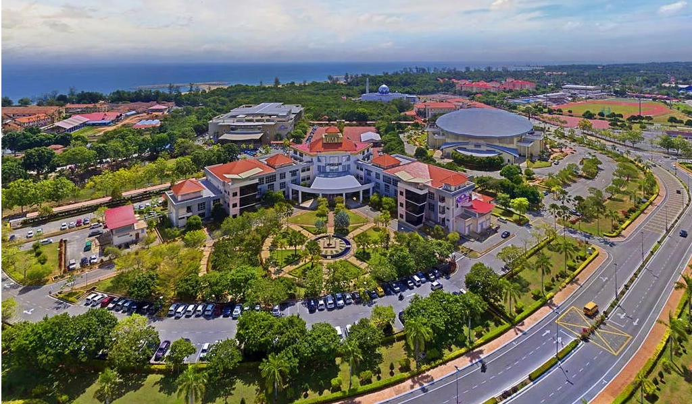
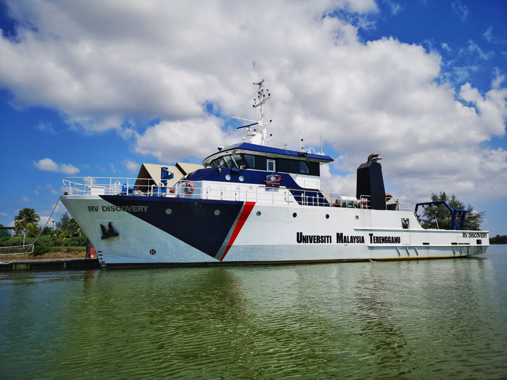

About
Universiti Malaysia Terengganu (UMT) is a public university located in Kuala Nerus, Terengganu, dedicated to marine science, environmental studies, and sustainable research. Established in 2001 and granted full university status in 2007, UMT offers a wide range of academic programmes from diploma to postgraduate levels. Known for its strong focus on oceanography, aquatic resources, and environmental conservation, UMT provides a coastal learning environment that supports hands-on research, innovation, and global sustainability efforts.
Objectives

- Explores all areas related to Science, Technology and Natural Resource Management through research.
- Provides the latest facilities (laboratories, libraries, computing and environment) to support the development of knowledge, learning and scholarship.
- Offers excellent programmes of study that meet current and future needs. Produces graduates who are responsible, knowledgeable, confident and competent.
- Plays an active role in the development of social, economic and education through the expansion services specifically to the local community of the East Coast Peninsular and to the Malaysians, in general.